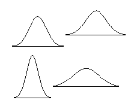
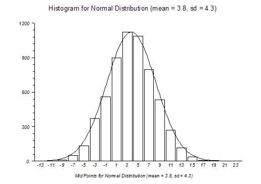

Normal Distribution(s)
Menu location: Analysis_Distributions_Normal.
The standard normal distribution is the most important continuous probability distribution. It was first described by De Moivre in 1733 and subsequently by the German mathematician C. F. Gauss (1777 - 1885). StatsDirect gives you tail areas and percentage points for this distribution (Hill, 1973; Odeh and Evans, 1974; Wichura, 1988; Johnson and Kotz, 1970).
Normal distributions are a family of distributions with a symmetrical bell shape:-

The area under each of the curves above is the same and most of the values occur in the middle of the curve. The mean and standard deviation of a normal distribution control how tall and wide it is.
The standard normal distribution (z distribution) is a normal distribution with a mean of 0 and a standard deviation of 1. Any point (x) from a normal distribution can be converted to the standard normal distribution (z) with the formula z = (x-mean) / standard deviation. z for any particular x value shows how many standard deviations x is away from the mean for all x values. For example, if 1.4m is the height of a school pupil where the mean for pupils of his age/sex/ethnicity is 1.2m with a standard deviation of 0.4 then z = (1.4-1.2) / 0.4 = 0.5, i.e. the pupil is half a standard deviation from the mean (value at centre of curve).

The diagram above shows the bell shaped curve of a normal (Gaussian) distribution superimposed on a histogram of a sample from a normal distribution. Many populations display normal or near normal distributions. There are also many mathematical relationships between normal and other distributions. Most statistical methods make "normal approximations" when samples are sufficiently large.
Central Limit Theorem
In order to understand why "normal approximations" can be made, consider the central limit theorem. The central limit theorem may be explained as follows: If you take a sample from a population with some arbitrary distribution, the sample mean will, in the limit, tend to be normally distributed with the same mean as the population and with a variance equal to the population variance divided by the sample size. A histogram plot of the means of many samples drawn from one population will therefore form a normal (bell shaped) curve regardless of the distribution of the population values.
Technical Validation
The tail area of the normal distribution is evaluated to 15 decimal places of accuracy using the complement of the error function (Abramowitz and Stegun, 1964; Johnson and Kotz, 1970). The quantiles of the normal distribution are calculated to 15 decimal places using a method based upon AS 241 (Wichura, 1988).
z0.001 = -3.09023230616781
Lower tail P(z= -3.09023230616781) = 0.001
z0.25 = -0.674489750196082
Lower tail P(z= 0.674489750196082) = 0.25
z1E-20 = -9.26234008979841
Lower tail P(z= -9.26234008979841) = 9.99999999999962E-21
The first two StatsDirect results above agree to 15 decimal places with the reference data of Wichura (1988). The extreme value (lower tail P of 1E-20) evaluates correctly to 14 decimal places.
Function Definition
Distribution function, Φ(z), of a standard normal variable z:

StatsDirect calculates Φ(z) from the complement of the error function (errc):